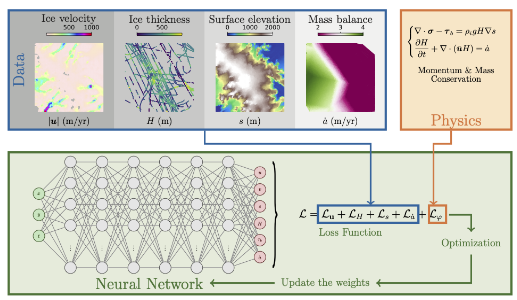
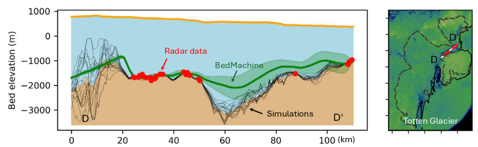
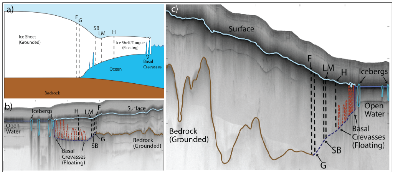
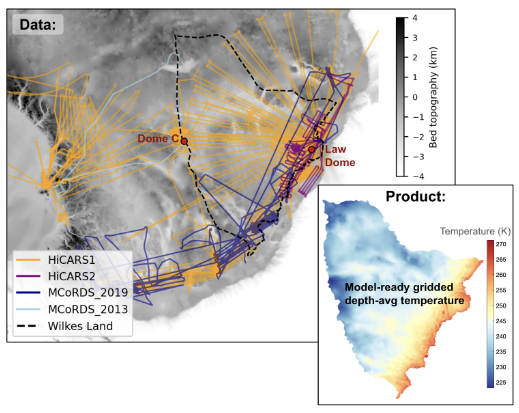

Announcing our Living Data Products awardees
Most observational data goes through many layers of processing and analysis to transform into a model-ready data product. The process of producing these derived data products and analysis products involves an enormous amount of technical and scientific expertise. The incentives of standard scientific publishing reward the first data product release, but fail to recognize the value of continuous updates. This has often led to these crucial data products becoming unmaintained, lagging behind advances in observations, or being difficult for others to reproduce.
Our Living Data Products grants are designed to incentivize and support scientists building data products as software. Our grantees are building software tools that encode the analysis and processing pipelines into reproducible workflows. This enables data products that are dynamically linked back to observational data sources and can easily be updated as new data becomes available.
We’re excited to share the 5 projects we’re funding and the amazing teams behind each project.
A Model-Ready Living Data Product Built with Physics-Informed Neural Networks for Greenland & Antarctica
Cheng Gong / Dartmouth College
There is an open post-doc position to work on this project. If you’re interested in applying, you can find more details on the job posting or email Cheng Gong directly.

Observational input: Ice surface velocity, ICESat-2 altimetry, radar-derived thickness picks, and surface mass balance reanalysis products
Living data product: A model-ready, physically self-consistent mesh-free initialization product for ice sheet models
Impact on models: Modelers are slow to adopt new observational data products in part because getting the observations onto the same grid and making them physically-consistent requires labor-intensive manual processes. This work aims to change that by using a physics-informed neural network (PINN) to ingest observational data and produce physically-consistent, mesh-free estimates of the starting state of each ice sheet. These mesh-free estimates can then be sampled directly onto individual model grids, accelerating the process of bringing new observations into models.
Learn more: This project is building upon the PINNICLE package. Follow along with the development on GitHub.
Topography Module for GeoBRIDGE: Geological Boundary Representation for Ice Dynamics and Glacial Evolution
Emma MacKie, Niya Shao, Michael Field / University of Florida

Observational input: Radar sounder data, surface velocity, and surface mass balance reanalysis products
Living data product: An ensemble of plausible realizations of bedrock topography beneath all of Antarctica
Impact on models: Existing models mostly use one of two bed topography products, neither of which is fully reproducible or able to be sampled to generate multiple realizations. This work will develop a fully reproducible pipeline to generate model-ready bedrock topography products. It will interpolate between radar data points using a mix of physics-based constraints and geostatistical measures of roughness. This approach produces an ensemble of bed realizations, creating a credible interface that describes our uncertainty based on the underlying data.
Greenland Grounding Line Locations
Leigh A. Stearns and Michael Shahin / University of Pennsylvania

Observational input: Radar sounder data and satellite-derived digital elevation models
Living data product: Annually-resolved grounding line locations of major Greenland marine-terminating glaciers
Impact on models: Grounding zones are the regions where the ocean reached under glaciers and starts to float the ice up. Models typically calibrate from the satellite-observed extent of glaciers or the flexure point observed from surface motion. For glaciers that end at the ocean (marine-terminating), this location may be kilometers in front of the actual grounding line and is almost certainly more sensitive to seasonal fluctuations. The melt from this ice-ocean interface is a significant part of the overall mass balance and important to the dynamics, so having a data product that tells us where the grounding line is, not just the terminus, will transform how we calibrate models. This will be the first large-scale data product with radar-derived grounding line location.
Living Ice Temperature Map for East Antarctica
Eliza Dawson, Michael Christoffersen, Donglai Yang, and Winnie Chu / Georgia Tech

Observational input: Radar sounder data
Living data product: Map of estimated internal (depth-averaged) temperature within the ice
Impact on models: Ice sheet models diverge widely in their estimates of internal temperature. Prior modelling work from this team has shown that small changes in temperature make a big different in future mass loss, especially in parts of East Antarctica. We currently have no way of measuring temperature beneath the ice without boreholes, so this team’s success will add a major new data-driven constraint to ice sheet models.
A model-data scoring framework: leveraging observational data to increase model skill
Anna Ruth (Ruthie) Halberstadt, Sara Peters, and Ginny Catania / University of Texas Austin

Ruthie’s team is developing model evaluation metrics. It’s not always obvious how data should be compared against models. Models are useful for telling us what our ice sheets will do on medium to long-term scales, not necessarily what they’ll do in a given year. As such, we care more about models being able to reproduce the types of dynamic changes we have seen or believe are possible than we do about them matching, for example, the specific retreat rate in the right year.
This team is developing comparison metrics that are designed to directly ask “are the models getting the dynamics right as we observe them?” rather than “are the models matching the observed data?” For example, you might compare a fast-flowing region by looking at the distribution of observed and modeled surface velocities. This is robust to the model perhaps placing the trunk of the ice stream 10 kilometers off from its actual center.